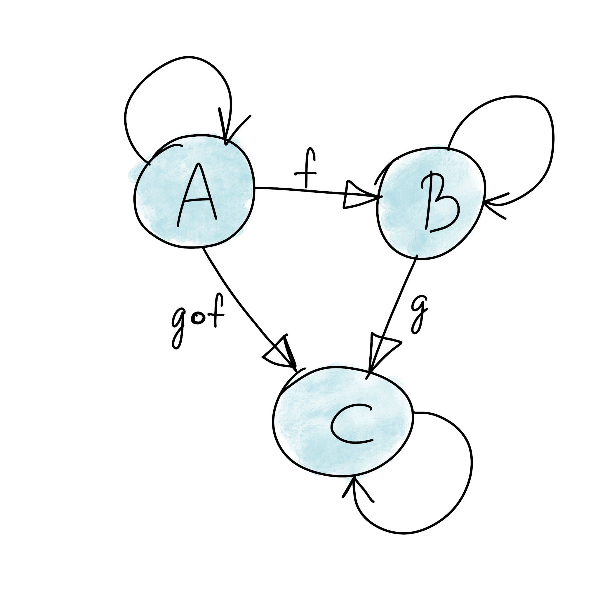
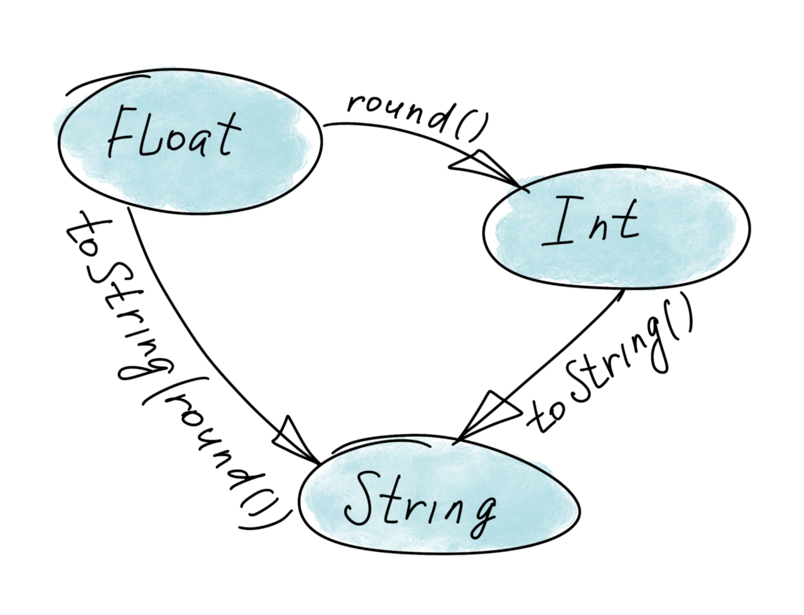
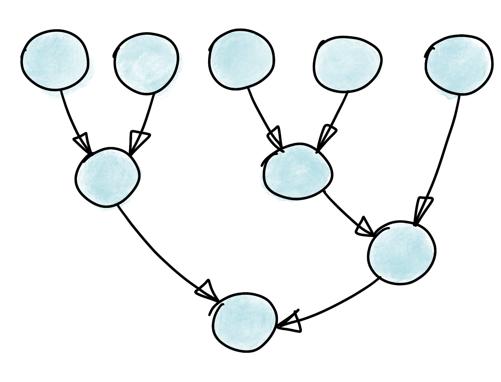

"Hello" ++ ", World!" -- "Hello world!"
[1..5] == [1, 2, 3, 4, 5]
['A'..'F'] == "ABCDEF"
[1..]
[1..3] ++ [4..6] -- [1, 2, 3, 4, 5, 6]
1 : [2, 3, 4] -- [1, 2, 3, 4]
[x*2 | x <- [1..5]] -- [2, 4, 6, 8, 10]
[(x, y) | x <- [1..3], y <- [1..3], x + y > 4] -- [(2,3), (3,2), (3,3)]
add :: Integer -> Integer -> Integer
add a b = a + b
add 1 3 -- 4
addOne = add 1 -- :: Integer -> Integer
addOne 4 -- 5
main :: IO ()
main = putStrLn "Hello, World!"
factorial :: Integer -> Integer
factorial n = if n < 2
then 1
else n * factorial (n - 1)
factorial :: Integer -> Integer
factorial 0 = 1
factorial n = n * factorial (n - 1)

| name | objects | morphism |
|---|---|---|
| Set | sets | functions |
| Grp | groups | group homomorfisms |
| VectK | vector spaces over field K | linear transformations |

One configuration source
Config configFromArgs = fromArgs(args);
startApplication(configFromArgs);
Two configuration sources
Config configFromArgs = fromArgs(args);
Config configFromFile = fromFile("config.yml");
Config config = combine(configFromFile, configFromArgs);
startApplication(config);
Multiple configuration sources
Config config = combineAll(configFromServer,
configFromFile,
configFromSystemEnv,
configFromArgs);
public <T> T apply(T a, T b);
Java
public interface Semigroup<A> {
A apply(A a, A b);
}
Haskell
class Semigroup a where
(<>) :: a -> a -> a
Java
static class StringSemigroup implements Semigroup<String> {
public String apply(String x, String y) {
return x + y;
}
}
Haskell
instance Semigroup String where
(<>) = (++)
Java
StringSemigroup ss = new StringSemigroup();
ss.apply("Hello", ss.apply(" ", "World"));
Haskell
"Hello" <> " " <> "World"
Java
class MinIntSemigroup implements Semigroup<Integer> {
public Integer apply(Integer a, Integer b) {
return a < b ? a : b;
}
}
Haskell
instance Ord a => Semigroup (Min a) where
Min a <> Min b = Min (min a b)
Java
MinIntSemigroup ms = new MinIntSemigroup();
ms.apply(100, ms.apply(42, 512));
Haskell
Min 100 <> Min 42 <> Min 512
Java
Optional<T> sconcat(Semigroup<T> semigroup, List<T> list)
Haskell
sconcat :: Semigroup a => [a] -> Maybe a

Java
public interface Monoid<A> extends Semigroup<A> {
A empty();
}
Haskell
class Semigroup a => Monoid a where
mempty :: a
Java
class StringMonoid implements Monoid<String> {
public String empty() { return ""; }
public String apply(String a, String b) {
return a + b;
}
}
Haskell
instance Monoid String where
mempty = ""
Java
class IntSumMonoid implements Monoid<Integer> {
public Integer empty() { return 0; }
public Integer apply(Integer a, Integer b) {
return a + b;
}
}
Haskell
instance Num a => Monoid (Sum a) where
mempty = Sum 0
Java
class IntProdMonoid implements Monoid<Integer> {
public Integer empty() { return 1; }
public Integer apply(Integer a, Integer b) {
return a * b;
}
}
Haskell
instance Num a => Monoid (Product a) where
mempty = Product 1
Java
public static <T> T mconcat(Monoid<T> monoid, List<T> list)
Haskell
mconcat :: [a] -> a
Customer customer = findCustomerByName(name);
String city = null;
if (customer != null) {
city = customer.getAddress().getCity();
}
List<Customer> customers = findAllCustomers();
List<String> cities = new ArrayList<String>();
for (Customer customer : customers) {
String city = customer.getAddress().getCity();
cities.add(city);
}
Future<Customer> customer = findCustomerByName(name);
String city = customer.get().getAddress().getCity();
Java
interface Functor<A> {
<B> Functor<B> map(Function<A, B> fn);
}
Haskell
class Functor f where
fmap :: (a -> b) -> f a -> f b
Identity Law
functor.map(x -> x) == functor
Composition Law
functor.map(x -> f(g(x))) == functor.map(g).map(f)
class Optional<T> implements Functor<T> {
private final T value;
private Optional(T value) {
this.value = value;
}
@Override
public <R> Optional<R> map(Optional<T, R> f) {
if (value == null)
return empty();
else
return of(f.apply(value));
}
public static <T> Optional<T> of(T a) {
return new Optional<T>(a);
}
public static <T> Optional<T> empty() {
return new Optional<T>(null);
}
}
Optional<Customer> customer = findCustomerByName(name);
Optional<String> city = customer
.map(Customer::getAddress)
.map(Address::getCity);
Haskell
Maybe a = Nothing | Just a
instance Functor Maybe where
fmap _ Nothing = Nothing
fmap f (Just a) = Just (f a)
class FList<T> extends ArrayList<T> implements Functor<T> {
@Override
public <R> FList<R> map(Function<T, R> f) {
FList<R> result = new FList<>();
for (int i = 0; i < size(); i++) {
R newElement = f.apply(get(i));
result.add(newElement);
}
return result;
}
}
FList<Customer> customers = getAllCustomers();
FList<String> cities = customers
.map(Customer::getAddress)
.map(Address::getCity);
Haskell
instance Functor [] where
fmap = map
class Promise<T> implements Functor<T> {
public <R> Promise<R> map(Function<T, R> f) { ... }
}
Promise<Customer> customer = customerServiceApi.getCustomerById(id);
Promise<String> city = customer
.map(Customer::getAddress)
.map(Address::getCity);
public Optional<Manager> findLocalManager(String city) { ... }
//...
Optional<Customer> customer = findCustomerByName(name);
Optional<Optional<Manager>> manager = customer
.map(Customer::getAddress)
.map(Address::getCity)
.map(city -> findLocalManager(city));
(a -> b) -> f a -> f b
(a -> f b) -> f a -> f b
Java
public interface Monad<T, M extends Monad<?, ?>> extends Functor<T> {
M flatMap(Function<T, M> f);
}
Haskell
class Functor m => Monad m where
(>>=) :: m a -> (a -> m b) -> m b
return :: a -> m a
class Optional<T> implements Monad<T, Optional<T>> {
private final T value;
private Optional(T value) {
this.value = value;
}
public static <T> Optional<T> of(T a) {
return new Optional<>(a);
}
public static <T> Optional<T> empty() {
return new Optional<>(null);
}
@Override
public <B> Optional<B> map(Function<T, B> fn) {
if (value == null)
return empty();
else
return of(fn.apply(value));
}
@Override
public Optional<T> flatMap(Function<T, Optional<T>> fn) {
if (value == null)
return empty();
else
return fn.apply(value);
}
}
public Optional<Manager> findLocalManager(String city) { ... }
//...
Optional<Customer> customer = findCustomerByName(name);
Optional<Manager> manager = customer
.map(Customer::getAddress)
.map(Address::getCity)
.flatMap(this::findLocalManager);
class Person {
private PersonalData personalData;
}
class PersonalData {
private Contact contact;
}
class Contact {
private Address address;
}
class Address {
private String city;
}
String city = null;
if (person.getPersonalData() != null
&& person.getPersonalData().getContact() != null
&& person.getPersonalData().getContact().getAddress() != null) {
city = person.getPersonalData().getContact().getAddress().getCity();
}
class Person {
private Optional<PersonalData> personalData;
}
class PersonalData {
private Optional<Contact> contact;
}
class Contact {
private Optional<Address> address;
}
class Address {
private String city;
}
Optional<String> city = person.getPersonalData()
.flatMap(PersonalData::getContact)
.flatMap(Contact::getAddress)
.map(Address::getCity);
public Promise<Customer> getCustomerByName(String name) { ... }
public Promise<Manager> getLocalManager(Address customerAddress) { ... }
public Promise<Meeting> scheduleMeeting(Manager manager, Customer customer) { ... }
Promise<Meeting> meeting = getCustomerByName(name)
.flatMap(customer ->
getLocalManager(customer.getAddress())
.flatMap(manager ->
scheduleMeeting(manager, customer)));
Scala:
val meeting = getCustomerByName(name)
.flatMap(customer =>
getLocalManager(customer.address)
.flatMap(manager =>
scheduleMeeting(manager, customer))
)
val meeting = for {
customer <- getCustomerByName(name)
manager <- getLocalManager(customer.address)
meeting <- scheduleMeeting(manager, customer)
} yield meeting
public class Either<L, R> implements Monad<R, Either<L, R>> {
private final L leftVal;
private final R rightVal;
private Either(L left, R right) {
this.leftVal = left;
this.rightVal = right;
}
public static <L, R> Either<L, R> left(L left) {
return new Either<>(left, null);
}
public static <L, R> Either<L, R> right(R right) {
return new Either<>(null, right);
}
@Override
public Either<L, R> flatMap(Function<R, Either<L, R>> f) {
if (leftVal != null)
return left(leftVal);
else
return f.apply(rightVal);
}
@Override
public <B> Either<L, B> map(Function<R, B> f) {
if (leftVal != null)
return left(leftVal);
else
return right(f.apply(rightVal));
}
}
Java
public Either<ServiceError, Customer> getCustomerByName(String name) { ... }
public Either<ServiceError, Manager> getLocalManager(Address customerAddress) { ... }
public Either<ServiceError, Meeting> scheduleMeeting(Manager manager, Customer customer) { ... }
Either<ServiceError, Meeting> meeting = getCustomerByName(name)
.flatMap(customer ->
getLocalManager(customer.getAddress())
.flatMap(manager ->
scheduleMeeting(manager, customer)));
Scala
val meeting = for {
customer <- getCustomerByName(name)
manager <- getLocalManager(customer.address)
meeting <- scheduleMeeting(manager, customer)
} yield meeting
class Functor m => Monad m where
(>>=) :: m a -> (a -> m b) -> m b
pure :: a -> m a
instance Monad Maybe where
(Just x) >>= k = k x
Nothing >>= _ = Nothing
pure x = Just x